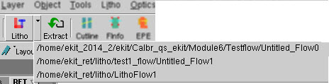

You can load
a self-contained setup file into your current session from the File menu of the RET Flow Tool.
Procedure
- On the
RET Flow Tool window, select in the RET Flow Tool.
- When the Open Setup File dialog
box appears, select the setup file you wish to add, then click Open. The setup file is loaded
as a new session in the RET Flow Tool.
- You can alternatively select
from a list of recently-loaded LITHO setup files by choosing from
the pulldown list (the downward triangle) next to the Litho button.
Figure 1. Recent Setup Files List